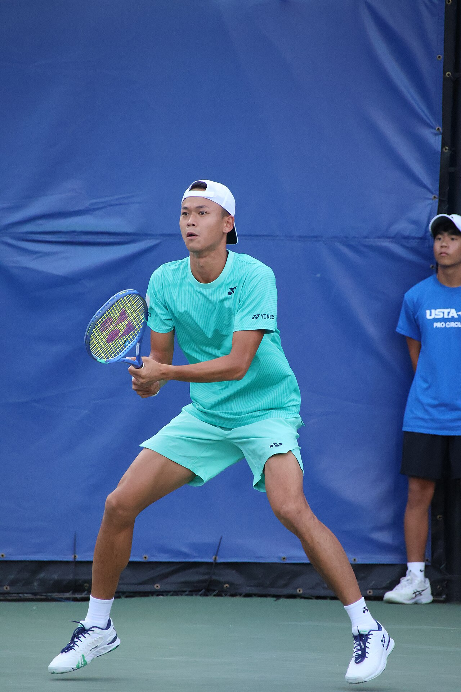

46勝27敗で駆け抜けた2026年。日本人初のNext Gen出場を決めた坂本選手を、データと一緒に応援する非公式ファンサイトです。
420pt ・ 自己最高 122位（2026/11/9）
TOP100ライン（616pt）まであと196pt。到達すれば四大大会本戦へストレートイン。
※グループ抽選後に組み合わせ・日程を更新予定。 錦織以外で日本勢初のNext Gen出場。
| 大会 | 2025 | 2026 |
|---|---|---|
| 全豪オープン | Q1 | 1R |
| 全仏オープン | — | Q1 |
| ウィンブルドン | Q | Q3 |
| 全米オープン | Q2 | 2R |
正しくは「坂本怜」。同じ読みの別人もいるので注意。
WOWOW、Tennis TVなど（大会により異なる）。
「REIVOLUTION channel」で発信中。
坂本選手の発信 本人のYouTube・Instagramから
- 2026/10/18 の投稿
- 2026/10/11 の投稿
- 2026/10/11 の投稿
- 2026/10/1 の投稿
Instagramを見る →